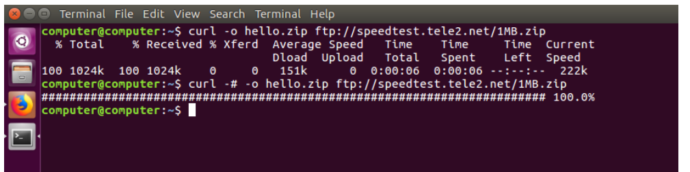

Overview
The curl command is used to transfer data from or to a server using protocols like HTTP, HTTPS, FTP, and more. It is widely used for testing APIs and downloading files.
What Does CURL Command Do?
The curl command is used to:
- Download or upload files from a URL.
- Test REST APIs by sending HTTP requests.
- Fetch headers or content of web pages.
Common Use Cases
- Download files from a remote server.
- Interact with APIs using GET, POST, PUT, or DELETE methods.
- Debug network connections by inspecting server responses.
Example
# Fetch the content of a webpage
curl https://example.com
# Download a file
curl -O https://example.com/file.zip
# Send a POST request with JSON data
curl -X POST -H "Content-Type: application/json" -d '{"key":"value"}' https://api.example.comExample Output

The image above shows an example of the output from the 'curl command, displaying processes sorted by CPU usage.